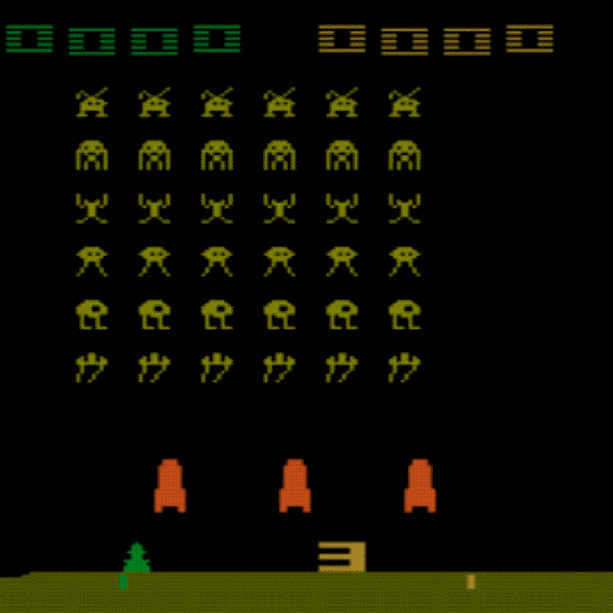
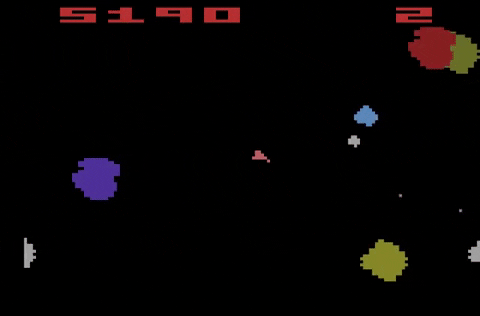
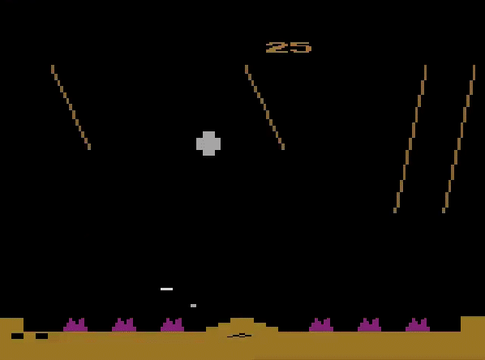
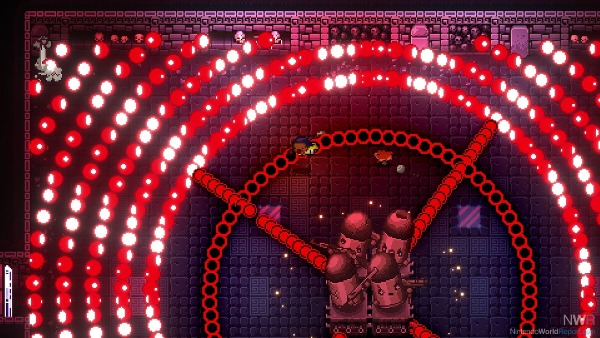

The shoot'em up games genre
Description
"Shoot'em up" (often abbreviated as "shmup") is a subgenre of shooter games (which is a subgenre of action games).
While there are many different opinions regarding the exact classification of shoot'em up among the critics, there are some characteristics that are common to most games considered part of this genre;
for example the restricted movement of the playable character (unidirectional "on-rail" movement, fixed position with rotation,...),
the high amount of enemies/obstacles coming from one or more sides of the screen (the "them" part of the genre's name), a score system quantifying how well the levels are played, ...
|  |
| Space Invaders on Atari 2600 |
Subgenres
The specifics of these characteristics can also be used to further categorize shoot'em up games into various subgenres like "side-scrolling shooters" (featuring a horizontally scrolling action and a side-view perspactive),
"fixed shooters" (with the action limited to a single screen and unidirectional movements), "bullet hell" (games where the screen is often full of the enemies' projectiles), ...
Despite the arguably confusing categorization, the gameplay of these games is usually pretty straightforward: move your character with the right timing to aim your shots and to avoid getting hit.
Nowadays most shoot'em up games are easily identifiable by simply looking at the similiarity of gameplay (due to design conventions of the genre) with other "shmup" games.
The shoot'em up genre in the second generation
Important games
Many of the design conventions mentioned previously come from the period of high popularity of these kind of games during the second generation of video games.
One of the main responsible for this rise in popularity was Space Invaders (originally released as an arcade game, then appeared on the Atari 2600 and other consoles later on):
it was one of the very first games of the genre and its success influenced and inspired many developers in making shoot'em ups.
|  |
| Asteroids |
Like Space Invaders, many important shoot'em ups like Asteroids, Defender, Galaxian and Missile Command were ported on the Atari 2600.
Looking at the best selling games on the Atari 2600 we can find many others shoot'em ups: Demon Attack, Laser Blast, Yars' Revenge, Atlantis, River Raid,...
|  |
| Missile Command |
Gameplay
All of these games had their own take on the basic gameplay while not changing the formula too much; for example Yar's Revenge featured a "neutral zone" where the player couldn't get hit but couldn't shoot either. As we can see, shoot'em ups were some of the most important and popular games of the second generation, shaping not only games of the same genre but also the whole industry of video games at the time.
The evolution of the shoot'em up genre in the following generations
Fading out of relevance
The improved hardware of the next generations allowed games to feature more "complex" gameplay, thus the simplicity of shoot'em up games wasn't a necessary design element as much as before.
However that's not to say that shoot'em ups were forgotten: the genre has since continued to evolve and adapt, finding a niche in the market and developing new mechanics and subgenres
(for example "twin-stick shooters", where the player is required to simoultaniously use two joysticks, one to move around and one to aim).
|  |  |
| Enter the Gungeon (2016) | Cuphead (2017) |
The recent resurgence
In particular on the last years with the rise of "indie" games (having more freedom on the choice of genre but less resources) and especially with the birth of mobile games for smartphones, the simple but addictive gameplay offered by shoot'em up games was once again quite appreciated. Some modern examples of relatively succesful shoot'em up games are Enter the gungeon(2016) and Cuphead(2017).
Sources
Banner image{kind=link}
Space Invaders gif
{kind=link}
Missile Command gif
{kind=link}
Asteroids gif
{kind=link}
Enter the Gungeon image
{kind=link}
Cuphead image
{kind=link}